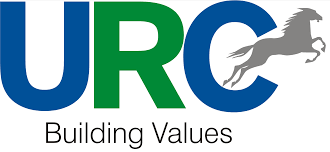
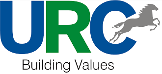

WELCOME TO STERLO
Your Low-Code and No-Code App Development Partner
We’re building a future where anyone can create software - all without coding. sterlo is a next-generation low-code and no-code (LCNC) platform that helps build code-free web and mobile apps. The platform is designed to support businesses of all sizes in their digital initiatives and adapt to the evolving needs of customers. We're a team of passionate people dedicated to empowering businesses and creators with the tools they need to turn great business ideas into effective apps, without the constraints of traditional coding. Our mission is to democratize app development by providing a user-friendly interface and an extensive range of features. sterlo liberates businesses to focus on innovation and growth effortlessly.
TRUSTED BY ENTERPRISES OF ALL SIZES WORLDWIDE
 

Our Story
What if creating a mobile app was as simple as playing with building blocks? That's how it started. sterlo was founded with the goal of revolutionizing the web and mobile app development company, and this notion served as the impetus for our creation. We've invested countless hours in research, development, and user feedback to simplify the process of building apps.
Why go with sterlo?
- No Coding Skills Needed : Forget about being a coding genius. sterlo's user-friendly drag-and-drop interface empowers you to craft, test, and launch your mobile and web apps effortlessly.
- Low Code for the Pros : If you're all about customization, our low-code platform features let you fine-tune your app's functions to your heart's content.
- Express Prototyping : sterlo speeds up the development process, allowing you to whip up prototypes in no time and refine your ideas on the fly.
- Scalability at Your Fingertips : Whether you're crafting a simple app or a complex enterprise solution, sterlo's platform grows with you. It's all about scalable low-code solutions.
- Join the Creative Community : Be part of an energetic no-code low-code community of creators and innovators, where you can team up, share concepts, and learn together - because at sterlo, we promote cross-platform app development and collaboration
Connect with Us Today!